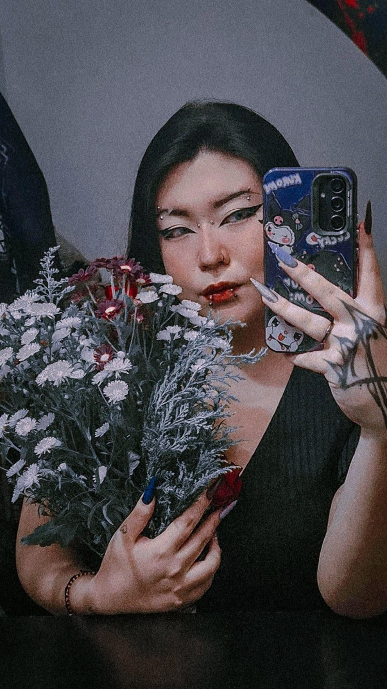
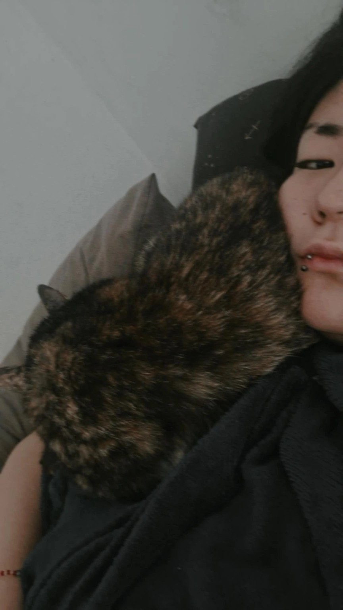
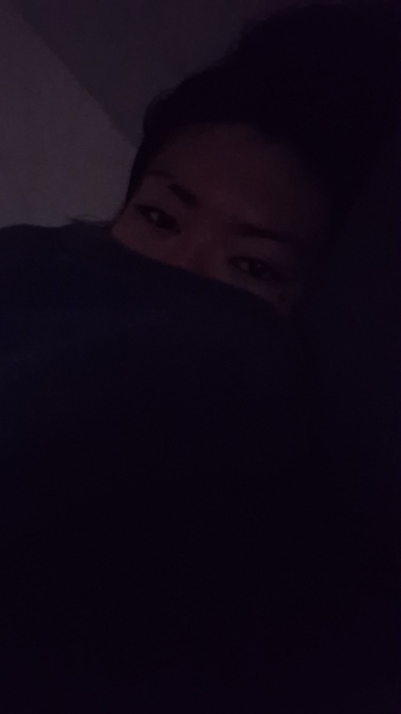
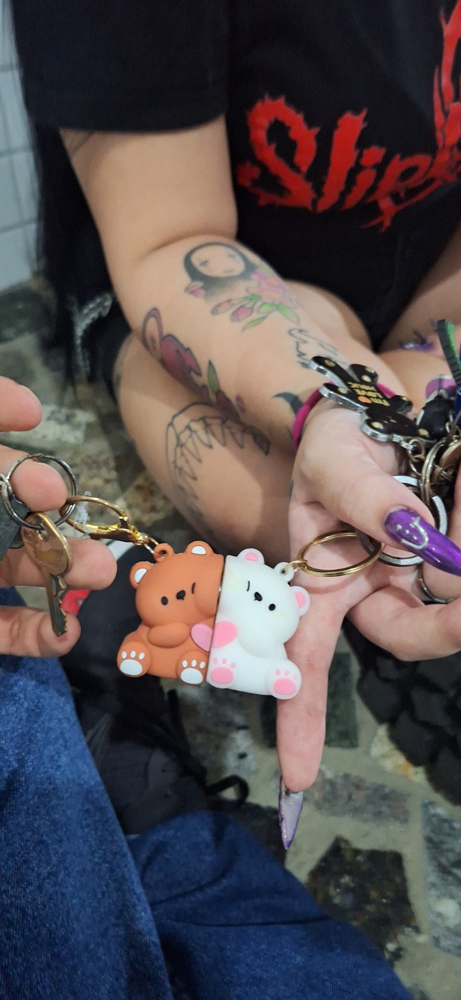
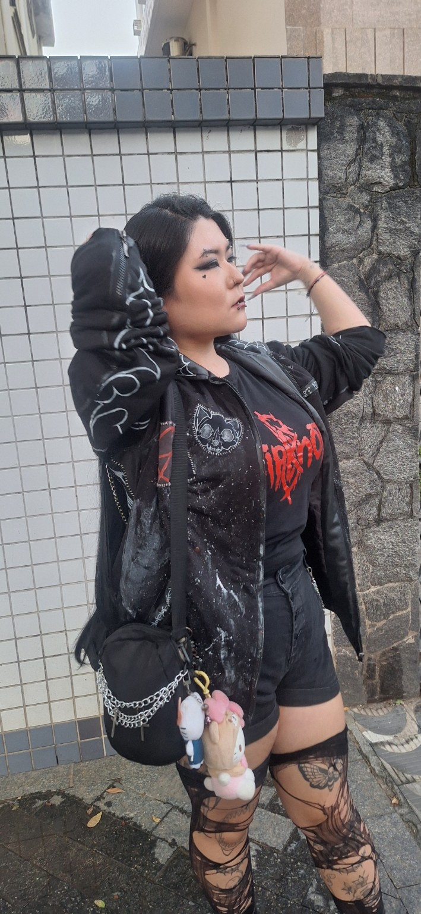
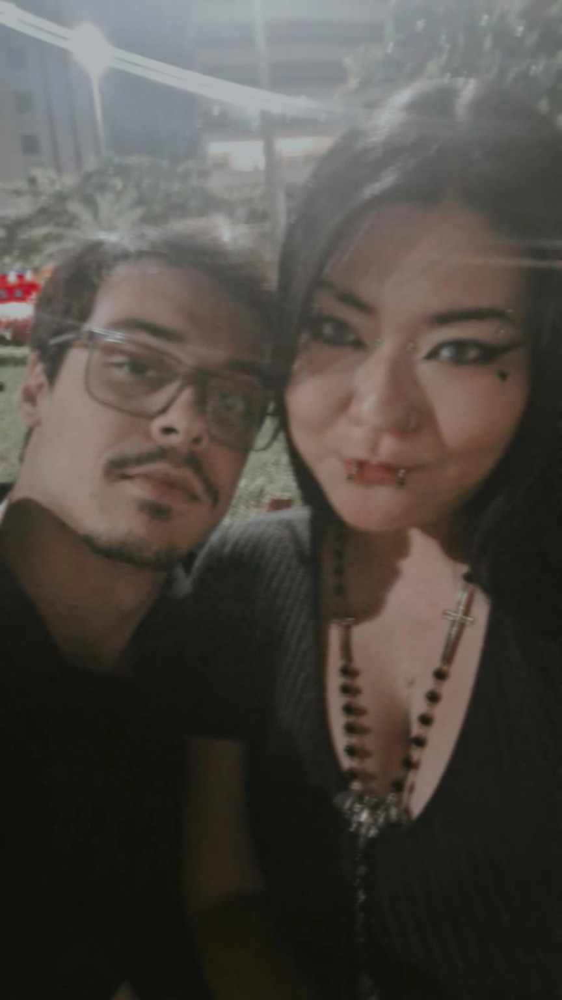
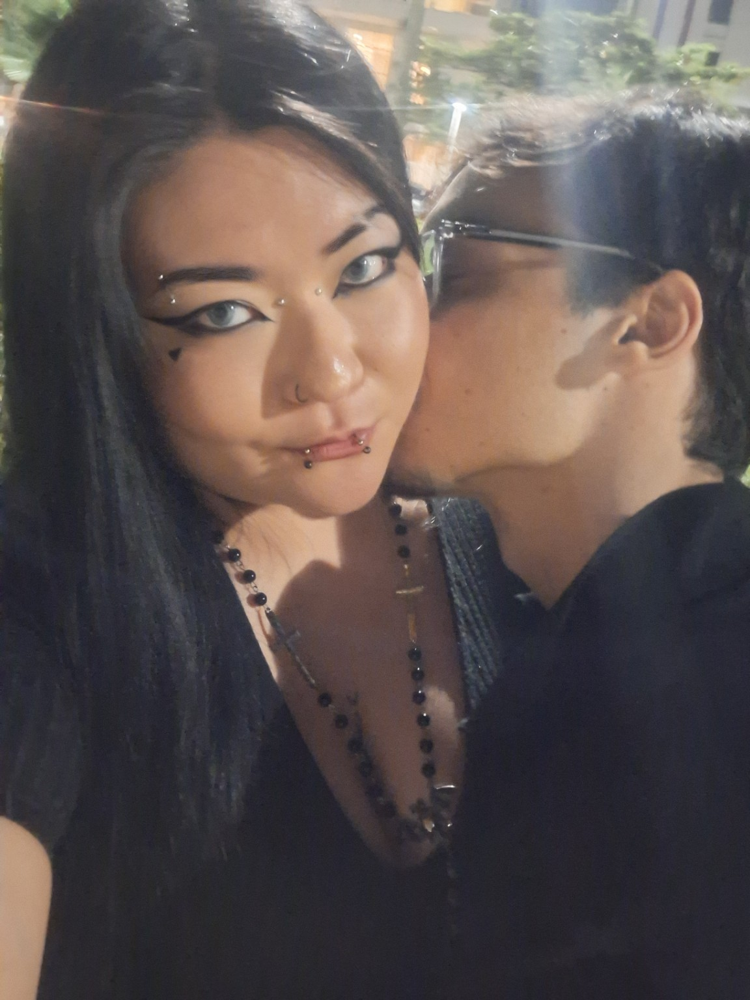
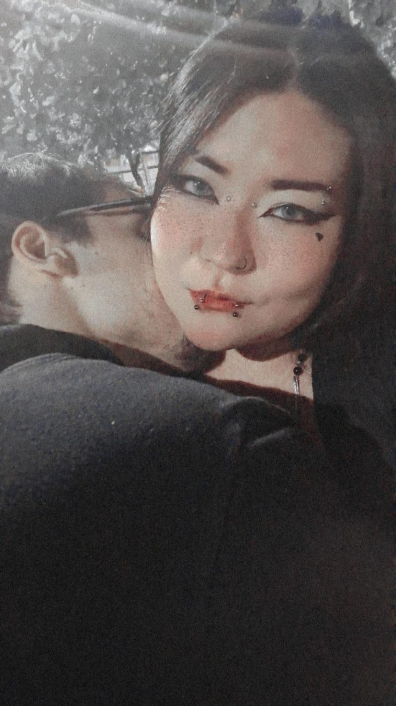

Lia
Tem gente que aparece na vida como acaso. Você apareceu como resposta. Desde que você chegou, até os dias comuns começaram a ter um gosto diferente.
entrar no nosso pequeno infinitoVocê foi o melhor acontecimento desse ano
Eu não sei em qual momento exato você deixou de ser só alguém especial e começou a ocupar esse lugar tão absurdo em mim.
Mas eu sei que, desde você, muita coisa ficou mais bonita. Seu jeito, seu olhar, sua presença, sua intensidade… tudo em você tem algo que prende, que marca, que fica.
E eu gosto disso. Gosto de você. Gosto do caos bonito que você traz. Gosto da paz estranha que eu sinto quando estou perto.
Alguns pedaços de você que ficaram em mim








O que eu quero te dizer
Não é sobre pressa. Não é sobre te prender. Não é sobre transformar sentimento em peso.
Quero estar nos teus dias bons, mas também nos difíceis. Quero rir contigo, cuidar de você, crescer ao teu lado e construir algo que continue bonito mesmo quando a vida não estiver fácil.
Eu gostaria que todos os dias daqui pra frente tivessem um pouco desse começo: essa vontade, essa descoberta, essa sensação de que a gente encontrou algo raro.
eu te amo♥
Do seu jeito. No seu tempo. Mas fica. Porque desde que você chegou, eu não penso só no agora. Eu penso em nós. E, sinceramente, eu quero viver muitos começos com você.